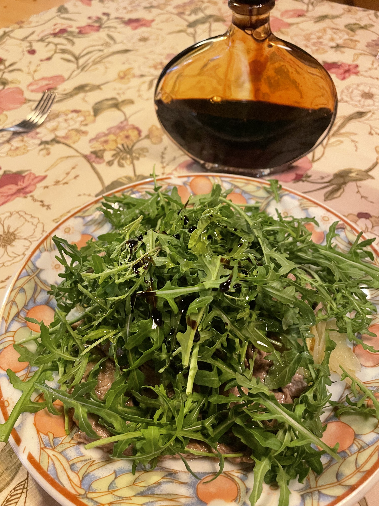

Straccetti su letto di porri con rucola e aceto balsamico di Modena
Introduzione e contesto
Una delle mie prime ricette su cui sono intervenuto

Ingredienti
| Ingrediente | Quantità | Unità | Note | Qualità |
|---|---|---|---|---|
| Carpaccio di manzo | 400 | g | ||
| Porro | 1 | Kg | ||
| Rucola | 100 | g | ||
| Aceto Balsamico Tradizionale di Modena DOP | qb | |||
| Olio | qb | |||
| Sale | qb | |||
| Pepe | qb |
Preparazione
I porri.
Mondo i porri, li taglio a striscioline sottili e lunghe, e li stufo in un tegame coperto con un cucchiaio di olio.
Il carpaccio.
Faccio saltare su pochissimo olio e aglio e per pochissimo tempo le fettine di carpaccio. Dispongo su piatti caldi, con i porri sul fondo, quindi le fettine, infine la rucola.
Condire.
Salo, pepo, aromatizzo con l'aceto balsamico di Modena IGP e passo un giro d'olio.

Note e osservazioni
Continua il racconto
 ItaliaLuogo
ItaliaLuogoFotografia
Tutti gli albumCadore - Estate 2022 Ravenna e Roma 2022
Ravenna e Roma 2022 Cadore - Estate 2021
Cadore - Estate 2021Continua…
 Toscana e Lazio 2021
Toscana e Lazio 2021 Cadore - Primavera 2021
Cadore - Primavera 2021 Cadore - Inverno 2021
Cadore - Inverno 2021Continua…
 Isola d'Elba 2020
Isola d'Elba 2020 Cadore - Estate 2020
Cadore - Estate 2020 Argentario e Lazio 2020
Argentario e Lazio 2020Continua…
 Roma 2019
Roma 2019 Cadore - Estate 2019
Cadore - Estate 2019 Cadore - Primavera 2019
Cadore - Primavera 2019Continua…
 Cadore - Inverno 2019
Cadore - Inverno 2019 Cadore - Estate 2018
Cadore - Estate 2018 Capraia 2018
Capraia 2018Continua…
 Cadore - Primavera 2018
Cadore - Primavera 2018 Cadore - Inverno 2018
Cadore - Inverno 2018 Urbino 2014
Urbino 2014Continua…
 Cadore 2013-2014
Cadore 2013-2014 Casa Zanetti (Lozzo di Cadore)
Casa Zanetti (Lozzo di Cadore) Valle Aurina 2013
Valle Aurina 2013Continua…
 Borghetto 2009
Borghetto 2009 Parco Segurta
Parco Segurta Vanoi, etc. 2009
Vanoi, etc. 2009Continua…
 Piccolo itinerario palladiano fra Malcontenta e Vicenza 2008
Piccolo itinerario palladiano fra Malcontenta e Vicenza 2008 Erto 2008
Erto 2008 Pusteria, Falzarego, Fanes... 2008
Pusteria, Falzarego, Fanes... 2008Continua…
 Vanoi e San Martino 2008
Vanoi e San Martino 2008 Alta Pusteria 2007
Alta Pusteria 2007 Rolle II 2007
Rolle II 2007Continua…
 Ischia e Procida 2007
Ischia e Procida 2007 Val Fiscalina
Val Fiscalina Rolle 2007
Rolle 2007Continua…
 Sella Ronda 2007
Sella Ronda 2007 Cansiglio 2007
Cansiglio 2007 Borca Villaggio ENI 2007
Borca Villaggio ENI 2007Continua…
 Val Venosta 2007
Val Venosta 2007 Zortea 2006
Zortea 2006 Siena e Castello di Tocchi 2006
Siena e Castello di Tocchi 2006Continua…
 Collio 2006
Collio 2006 Livinallongo del col di lana e Canazei 2006
Livinallongo del col di lana e Canazei 2006 San Germano 2005
San Germano 2005 Provincia di Viterbo e Provincia di Perugia 2004
Provincia di Viterbo e Provincia di Perugia 2004 Marina di Modica 1989
Marina di Modica 1989 Bagheria Aspra 1988
Bagheria Aspra 1988 Val Brembana 1988
Val Brembana 1988 Chamois 1988
Chamois 1988 Pragelato e dintorni 1988
Pragelato e dintorni 1988 5 Terre 1988
5 Terre 1988 Caorle 1987
Caorle 1987 Sestriere 1987
Sestriere 1987 Marmolada 1986
Marmolada 1986 Rifugio Selleries 1986
Rifugio Selleries 1986 Cascata del Pis 1985
Cascata del Pis 1985 San Germano (dintorni) 1985
San Germano (dintorni) 1985 Mestre 1984
Mestre 1984 San Germano e dintorni 1984
San Germano e dintorni 1984 Isola d'Elba e Maremma 1981
Isola d'Elba e Maremma 1981 Irpinia Terremoto 1980
Irpinia Terremoto 1980 Usseaux
Usseaux Weekend a Braies e Dobbiaco 2004
Weekend a Braies e Dobbiaco 2004 Weekend a Curon Venosta e Stelvio 2004
Weekend a Curon Venosta e Stelvio 2004 Viaggio a Alghero 2002
Viaggio a Alghero 2002 Alghero, Porto Conte e Asinara 2002
Alghero, Porto Conte e Asinara 2002Approfondimenti
 Il bosco costruito
Il bosco costruitoStoria di un paesaggio alpino